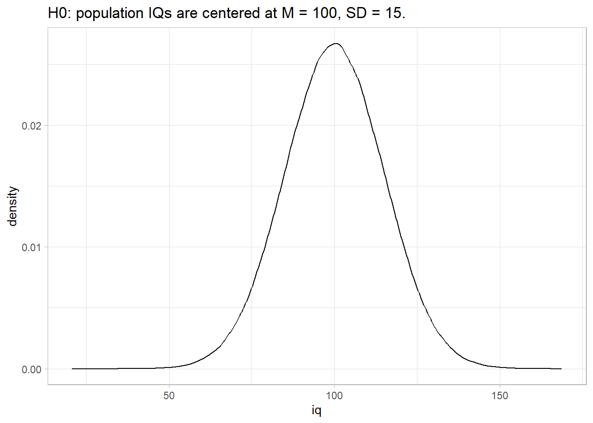
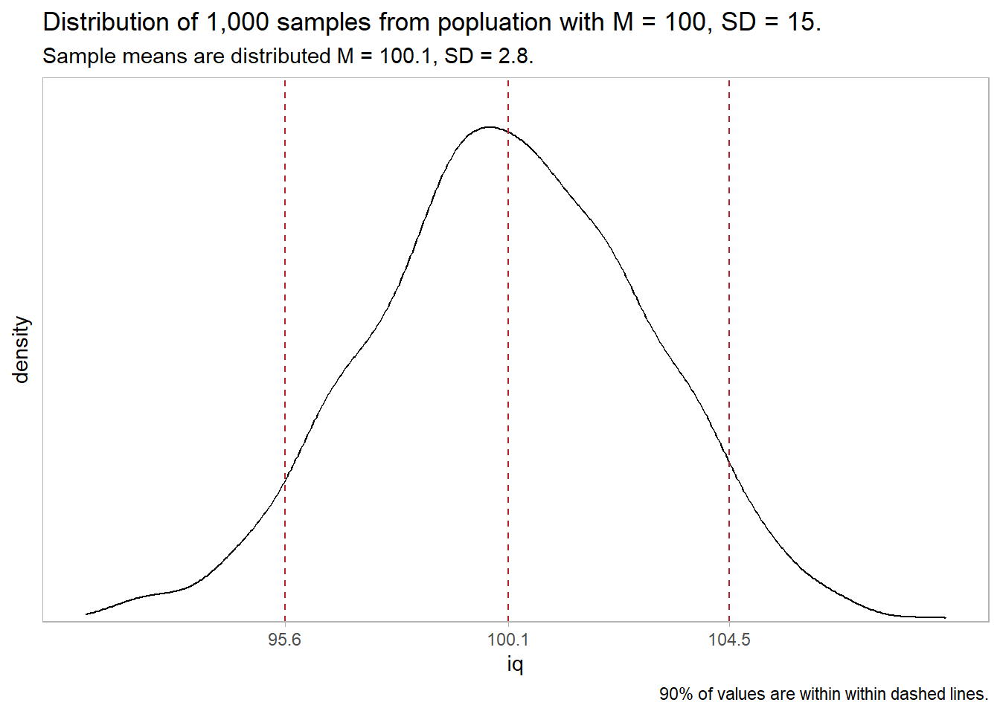
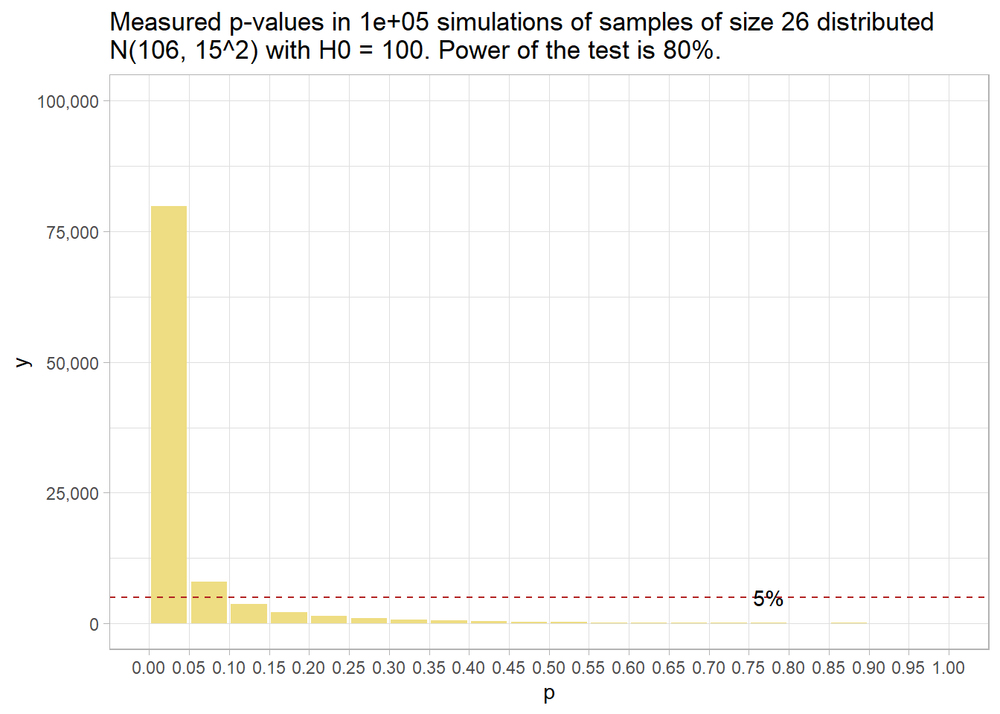

Chapter 2 Two-Group Comparison Tests
Use independent samples tests to either describe a variable’s frequency or central tendency difference between two independent groups, or to compare the difference to a hypothesized value.
If the data generating process produces continuous outcomes (interval or ratio) and the outcomes are symmetrically distributed, the difference in the sample means, \(\hat{d} = \bar{x} - \bar{y}\), is a random variable centered at the population difference, \(d = \mu_X - \mu_Y\). You can use a theoretical distribution (normal or student t) to estimate a 95% confidence interval (CI) around \(d\), or compare \(\hat{d}\) to an hypothesized population difference, \(d_0\). If you (somehow) know the sampling distribution variances \(\sigma^2_X\) and \(\sigma^2_Y\), or the Central Limit Theorem (CLT) conditions hold, you can assume the random variable is normally distributed and use the z-test, otherwise assume the random variable has a student t distribution and use the t-test.1 If the data generating process produces continuous outcomes that are not symmetrically distributed, use a non-parametric test like the Mann-Whitney U test.
If the data generating process produces discrete outcomes (counts), the sample count, \(x\), is a random variable from a Poisson, binomial, normal, or multinomial distribution, or a random variable from a theoretical outcome. For two independent samples, the data can be organized into a two-way table - a frequency table for two categorical variables. If you have a single categorical predictor variable, you can test whether the joint frequency counts differ from the expected frequency counts in the saturated model. You analyze a two-way table one of two ways.
If you only care about comparing two levels (like when the response variable is binary), conduct a proportion difference z-test or a Fisher exact test.
If you want to compare the joint frequency counts to expected frequency counts under the independence model (the model of independent explanatory variables), conduct a Pearson’s chi-squared independence test, or a G-test.
2.1 Independent Samples t Test
If a population measure X is normally distributed with mean \(\mu_X\) and variance \(\sigma_X^2\), and population measure Y is normally distributed with mean \(\mu_Y\) and variance \(\sigma_Y^2\), then their difference is normally distributed with mean \(d = \mu_X - \mu_Y\) and variance \(\sigma_{XY}^2 = \sigma_X^2 + \sigma_Y^2\). By the CLT, as the sample sizes grow, non-normally distributed X and Y will approach normality, and so will their difference.
The independent samples t-test uses the difference in sample means \(\hat{d} = \bar{x} - \bar{y}\) as an estimate of \(d\) to evaluate an hypothesized difference, \(d_0\). The null hypothesis is \(d = d_0\). Alternatively, you can construct a \((1 - \alpha)\%\) confidence interval around \(\hat{d}\) to estimate \(d\) within a margin of error, \(\epsilon\).
In principal, you can test the difference between independent means with either a z test or a t test. Both require independent samples and approximately normal sampling distributions. The sampling distributions are normal if the underlying populations are normally distributed, or if the sample sizes are large (\(n_X\) and \(n_Y\) \(\ge\) 30). However, the z-test additionally requires known sampling distribution variances \(\sigma^2_X\) and \(\sigma^2_Y\). These variances are never known, so always use the t-test.
The z-test assumes \(d\) has a normal distribution centered at \(\hat{d} = d\) with standard error \(se = \sqrt{\frac{\sigma_X^2}{n_X} + \frac{\sigma_Y^2}{n_Y}}.\) Test \(H_0: d = d_0\) with test statistic \(Z = \frac{\hat{d} - d_0}{se}\) or define a \((1 - \alpha)\%\) confidence interval as \(d = \hat{d} \pm z_{(1 - \alpha {/} 2)} se\).
The t-test assumes \(d\) has a t distribution centered at \(\hat{d} = d\) with standard error \(se = \sqrt{\frac{s_X^2}{n_X} + \frac{s_Y^2}{n_Y}}.\) Test \(H_0: d = d_0\) with test statistic \(T = \frac{\hat{d} - d_0}{se}\), or define a \((1 - \alpha)\%\) confidence interval as \(d = \hat{d} \pm t_{(1 - \alpha / 2), (n_X + n_Y - 2)} se\).
However, there is an issue with the t test degrees of freedom. If the sample sizes are small, and the standard deviations from each population are similar (the ratios of \(s_X\) and \(s_Y\) are <2), you can pool the variances \(s_p^2 = \frac{(n_X - 1) s_X^2 + (n_Y-1) s_Y^2}{n_X + n_Y-2}\) so that \(se = s_p \sqrt{\frac{1}{n_X} + \frac{1}{n_Y}}\) and \(df = n_X + n_Y -2\). This is call the pooled variances t-test. Otherwise, \(se = \sqrt{\frac{s_X^2}{n_X} + \frac{s_Y^2}{n_Y}}\), but you must reduce the degrees of freedom using the Welch-Satterthwaite correction, \(df = \frac{\left(\frac{s_X^2}{n_X} + \frac{s_Y^2}{n_Y}\right)^2}{\frac{s_X^4}{n_X^2\left(N_X-1\right)} + \frac{s_Y^4}{n_Y^2\left(N_Y-1\right)}}.\) This is called the separate variance t-test, or Welch’s t-test.
Example
A company shows an advertisement to \(n_M\) = 20 males and \(n_F\) = 20 females, then measures their engagement with a survey. Do the mean engagement scores differ between the groups?

engage_gt <- engage %>%
gtsummary::tbl_summary(by = gender,
statistic = list(all_continuous() ~ "{mean} ({sd})"))
engage_gt| Characteristic | Male, N = 201 | Female, N = 201 |
|---|---|---|
| engagement | 5.56 (0.29) | 5.30 (0.39) |
|
1
Statistics presented: Mean (SD)
|
||
You can report the following initially.
There were 20 male and 20 female participants. Data are mean \(\pm\) standard deviation, unless otherwise stated. The advertisement was more engaging to male viewers, 5.56 (0.29), than female viewers, 5.30 (0.39).
Conditions
The independent samples t test applies when the variable is continuous, partitioned into two independent samples, and the observations are independent. Additionally, there are three conditions related to the data distribution. If any condition fails, try the suggested work-around or use the non-parametric Mann-Whitney U Test instead.
- Outliers. There should be no outliers in either group because they exert a large influence on the mean and standard deviation. Test with a box plot. If there are outliers, you might be able to drop them or transform the data.
- Normality. Values should be nearly normally distributed (“nearly” because the t-test is robust to the normality assumption). This condition is especially important with small sample sizes. Test with Q-Q plots or the Shapiro-Wilk test for normality. If the data is very non-normal, you might be able to transform the data.
- Homogeneous Variances. If variances are homogenous, you can use the pooled-variances method; otherwise you use the separate variance method. Test with Levene’s test of equality of variances.
Outliers
Assess outliers with a box plot. Box plot whiskers extend up to 1.5*IQR from the upper and lower hinges and outliers (beyond the whiskers) are are plotted individually. There are no outliers is this plot. Report this as
There were no outliers in the data, as assessed by inspection of a boxplot.

If the outliers are data entry errors or measurement errors, fix or discard them. If the outliers are genuine, you have a couple options before reverting to the Mann-Whitney U test.
- Leave it in if it doesn’t affect the conclusion (compared to taking it out).
- Transform the variable. Don’t do this unless the variable is also non-normal. Transformation also has the downside of making interpretation more difficult.
Normality
Assume the population is normally distributed if n \(\ge\) 30. Otherwise, asses a Q-Q plot, skewness and kurtosis values, or a histogram. If you still don’t feel confident about normality, run a Mann-Whitney U Test.
The data set has \(n_M\) = 20 male and \(n_F\) = 20 female observations, so you need to test normality. The QQ plot indicates normality.
engage %>%
ggplot(aes(sample = engagement, group = gender, color = fct_rev(gender))) +
stat_qq() +
stat_qq_line(col = "goldenrod") +
theme_minimal() + theme(legend.position = "top") +
labs(title = "Normal Q-Q Plot", color = NULL)
Both Shapiro-Wilk normality tests (males and females) fail to reject the normality assumption. Report this as
Engagement scores for each level of gender were normally distributed, as assessed by Shapiro-Wilk’s test (p > .05).
## $Male
##
## Shapiro-Wilk normality test
##
## data: .$engagement
## W = 0.98344, p-value = 0.9705
##
##
## $Female
##
## Shapiro-Wilk normality test
##
## data: .$engagement
## W = 0.96078, p-value = 0.5595If the data is not normally distributed, you still have a couple options before reverting to the Mann-Whitney U test.
- Transform the dependent variable.
- Carry on regardless - the independent samples t-test is fairly robust to deviations from normality.
Homogenous Variances
Use the pooled-variances method if variances are homogeneous; otherwise use the separate variance method. A rule of thumb is that homogeneous variances have a ratio of standard deviations between 0.5 and 2.0:
sd(engage %>% filter(gender == "Male") %>% pull(engagement)) /
sd(engage %>% filter(gender == "Female") %>% pull(engagement))## [1] 0.7419967You can also use the F test to compare the ratio of the sample variances \(\hat{r} = s_X^2 / s_Y^2\) to an hypothesized ratio of population variances \(r_0 = \sigma_X^2 / \sigma_Y^2 = 1.\)
var.test(engage %>% filter(gender == "Female") %>% pull(engagement),
engage %>% filter(gender == "Male") %>% pull(engagement))##
## F test to compare two variances
##
## data: engage %>% filter(gender == "Female") %>% pull(engagement) and engage %>% filter(gender == "Male") %>% pull(engagement)
## F = 1.8163, num df = 19, denom df = 19, p-value = 0.2025
## alternative hypothesis: true ratio of variances is not equal to 1
## 95 percent confidence interval:
## 0.7189277 4.5888826
## sample estimates:
## ratio of variances
## 1.816336Bartlett’s test is a second option.
##
## Bartlett test of homogeneity of variances
##
## data: engage$engagement and engage$gender
## Bartlett's K-squared = 1.6246, df = 1, p-value = 0.2024Levene’s test is a third option. Levene’s is less sensitive to departures from normality than Bartlett.
engage_report$levene <- with(engage, car::leveneTest(engagement, gender, center = "mean"))
engage_report$levene## Levene's Test for Homogeneity of Variance (center = "mean")
## Df F value Pr(>F)
## group 1 1.922 0.1737
## 38Report these results as
There was homogeneity of variances for engagement scores for males and females, as assessed by Levene’s test for equality of variances (p = 0.174).
Results
Conduct the t-test. To get a 95% CI around the difference (instead of around the estimate), run the test using the difference, \(\mu_0 - \bar{x}\), and leave mu at its default of 0.
##
## Two Sample t-test
##
## data: engagement by gender
## t = 2.3645, df = 38, p-value = 0.02327
## alternative hypothesis: true difference in means is not equal to 0
## 95 percent confidence interval:
## 0.03725546 0.48074454
## sample estimates:
## mean in group Male mean in group Female
## 5.558875 5.299875| Characteristic | Male, N = 201 | Female, N = 201 |
|---|---|---|
| engagement | 5.56 (0.29) | 5.30 (0.39) |
|
1
Statistics presented: Mean (SD)
|
||
Report this as:
There was a statistically significant difference in mean engagement score between males and females, with males scoring higher than females, 0.26 (95% CI, 0.04 to 0.48), t(38) = 2.365, p = 0.023.
The effect size, called Cohen’s d, is defined as \(d = |M_D| / s\), where \(|M_D| = \bar{x} - \bar{y}\), and \(s\) is the pooled sample standard deviation, \(s_p = \sqrt{\frac{(n_X - 1) s_X^2 + (n_Y-1) s_Y^2}{n_X + n_Y-2}}\). \(d <.2\) is considered trivial, \(.2 \le d < .5\) small, and \(.5 \le d < .8\) large.
## Cohen's d | 95% CI
## ------------------------
## 0.75 | [0.10, 1.39]
## - Estimate using pooled SDAlways construct a plot, just to make sure your head is on straight.

Now you are ready to report the results.
Data are mean \(\pm\) standard deviation, unless otherwise stated. There were 20 male and 20 female participants. An independent-samples t-test was run to determine if there were differences in engagement to an advertisement between males and females. There were no outliers in the data, as assessed by inspection of a boxplot. Engagement scores for each level of gender were normally distributed, as assessed by Shapiro-Wilk’s test (p > .05), and there was homogeneity of variances, as assessed by Levene’s test for equality of variances (p = 0.174). There were 20 male and 20 female participants. The advertisement was more engaging to male viewers (5.56 \(\pm\) = 0.29) than female viewers (5.30 \(\pm\) = 0.39), a statistically significant difference of 0.26 (95% CI, 0.04 to 0.48), t(38) = 2.365, p = 0.023, d = 0.75.
2.2 Paired Samples t Test
The paired two-sample test uses the mean of sampled paired differences \(\bar{d} = \sum_{i = 1}^n (x_i - y_i) {/} n\) as an estimate of the mean of the population paired differences \(\delta\) to evaluate the hypothesized mean of population paired differences \(\delta_0\). Test \(H_0: \delta = \delta_0\) with test statistic \(T = \frac{\bar{d} - \delta_0}{se}\), or define a \((1 - \alpha)\%\) confidence interval as \(\delta = \bar{d} \pm t_{1 - \alpha / 2, n - 1} se\). The paired t-test is really just a single mean t-test operating on variable that is defined as the difference between two variables.
Example
\(n\) = 20 athletes consume a carb-only or carb+protein drink prior to running as far as possible in 2 hours and a researcher measures their distances under both conditions. Does the mean differences in scores differ from 0?
drink_gt <- drink %>%
gtsummary::tbl_summary(statistic = list(all_continuous() ~ "{mean} ({sd})"))
drink_gt| Characteristic | N = 201 |
|---|---|
| carb | 11.17 (0.73) |
| carb_protein | 11.30 (0.71) |
| difference | 0.14 (0.10) |
|
1
Statistics presented: Mean (SD)
|
|
You can report the following initially.
There were 20 participants. Data are mean \(\pm\) standard deviation, unless otherwise stated. Participants ran further after consuming the carbohydrate-protein drink, 11.30 (0.71) km, than the carbohydrate-only drink, 11.17 (0.73) km.
Conditions
The paired samples t test applies when the variable is continuous and a partitioned into dependent pairs, Additionally, there are two conditions related to the data distribution. If either condition fails, try the suggested work-around or use the non-parametric Wilcoxon Paired Sample Test instead.
- Outliers. There should be no outliers in differences because they exert a large influence on the mean and standard deviation. Test with a box plot. If there are outliers, you might be able to drop them or transform the data.
- Normality. Differences should be nearly normally distributed (“nearly” because the t-test is robust to the normality assumption). This condition is especially important with small sample sizes. Test with Q-Q plots or the Shapiro-Wilk test for normality. If the data is very non-normal, you might be able to transform the data.
There are two common study designs that employ a paired samples t test to compare two related groups. One relates the groups as two time points for the same subjects. The second relates the groups as two tests of the same subjects, e.g. comparing reaction time under two lighting conditions.
Outliers
Assess outliers with a box plot. Box plot whiskers extend up to 1.5*IQR from the upper and lower hinges and outliers (beyond the whiskers) are are plotted individually. The boxplot shows no outliers, although two points are actually right on the 1.5*IQR cusp.

Report inconsequential outliers as > Two outliers were detected that were more than 1.5 box-lengths from the edge of the box in a boxplot. Inspection of their values did not reveal them to be extreme and they were kept in the analysis.
or if there are no outliers, report as >There were no outliers in the data, as assessed by inspection of a boxplot.
If the outliers are data entry errors or measurement errors, fix them or discard them. If the outliers are genuine, you have a couple options before reverting to Wilcoxon.
- Transform the variable. Don’t do this unless the variable is also non-normal. Transformation also has the downside of making interpretation more difficult.
- Leave it in if it doesn’t affect the conclusion (compared to taking it out).
Normality
Assume the population is normally distributed if n \(\ge\) 30. Otherwise, asses a Q-Q plot, skewness and kurtosis values, or a histogram. If you still don’t feel confident about normality, run a [Shapiro-Wilk Test].
The data set has n = 20 observations, so you cannot assume normality. The QQ plot indicates normality.
drink %>%
ggplot(aes(sample = difference)) +
stat_qq() +
stat_qq_line(col = "goldenrod") +
theme_minimal() +
labs(title = "Normal Q-Q Plot")
The Shapiro-Wilk normality test fails to reject the null hypothesis of a normally distributed population.
##
## Shapiro-Wilk normality test
##
## data: drink$difference
## W = 0.97119, p-value = 0.7797Report this as > The differences between the distance ran in the carbohydrate-only and carbohydrate-protein trial were normally distributed, as assessed by Shapiro-Wilk’s test (p = 0.780).
If the data is not normally distributed, you still have a couple options before reverting to Wilcoxon.
- Transform the dependent variable.
- Carry on regardless - the one-sample t-test is fairly robust to deviations from normality.
Results
Conduct the t-test. To get a 95% CI around the difference (instead of around the estimate), run the test using the difference, \(\mu_0 - \bar{x}\), and leave mu at its default of 0.
(drink_report$ci <- t.test(
x = drink$carb_protein,
y = drink$carb,
alternative = "two.sided",
paired = TRUE,
conf.level = .95)
)##
## Paired t-test
##
## data: drink$carb_protein and drink$carb
## t = 6.3524, df = 19, p-value = 4.283e-06
## alternative hypothesis: true difference in means is not equal to 0
## 95 percent confidence interval:
## 0.09085492 0.18014508
## sample estimates:
## mean of the differences
## 0.1355Report this as:
The carbohydrate-protein drink elicited an increase of 0.135 (95% CI, 0.091 to 0.180) km in the distance run in two hours compared to a carbohydrate-only drink.
The effect size, called Cohen’s d, is defined as \(d = |M_D| / s\), where \(|M_D| = \bar{x} - \mu_0\), and \(s\) is the sample standard deviation. \(d <.2\) is considered trivial, \(.2 \le d < .5\) small, and \(.5 \le d < .8\) large.
## Cohen's d | 95% CI
## ------------------------
## 1.42 | [0.80, 2.09]
## - Estimate using pooled SDCohen’s d is 1.42, a large effect.
Construct a plot.

Now you are ready to report the results.
A paired-samples t-test was used to determine whether there was a statistically significant mean difference between the distance ran when participants drank a carbohydrate-protein drink compared to a carbohydrate-only drink. Data are mean \(\pm\) standard deviation, unless otherwise stated. Two outliers were detected that were more than 1.5 box-lengths from the edge of the box in a boxplot. Inspection of their values did not reveal them to be extreme and they were kept in the analysis. The assumption of normality was not violated, as assessed by Shapiro-Wilk’s test (p = 0.780). Participants ran further after consuming the carbohydrate-protein drink, 11.30 (0.71) km, than the carbohydrate-only drink, 11.17 (0.73) km, a statistically significant increase of 0.135 (95% CI, 0.091 to 0.180) km, t(19) = 6.352, p = 0.0000, d = 1.42.
2.3 Mann-Whitney U Test for Numeric Vars
This test applies when the variable distributions are non-normally.
2.4 Wilcoxon Paired-Sample Test for Numeric Vars
This test applies when the variable distributions are non-normally distributed and samples are paired.
2.5 Pearson’s Correlation for Numeric Vars
2.6 Spearman’s Ranked Correlation for Numeric Vars
2.7 2 Sample Independent t Test for Categorical Vars
This test applies when you know the population variance.
2.8 2 Sample Welch’s t Test for Categorical Vars
This test applies when the variable variances are unequal.
2.9 Paired Sample t Test for Categorical Vars
This test applies when you have paired samples.
2.10 Mann-Whitney U Test for Categorical Vars
This test applies when the variable distributions are non-normally.
2.11 Wilcoxon Paired-Sample Test for Categorical Vars
This test applies when the variable distributions are non-normally distributed and samples are paired.
2.12 Pearson’s Correlation for Categorical Vars
2.13 Spearman’s Ranked Correlation for Categorical Vars
2.14 Fisher’s Exact Test
Use Fisher’s Exact Test to test whether the observed frequencies of a single discrete dichotomous variable are equal. Suppose you have a treatment and control, and a binary outcome with two levels, sick and cured. The
observed frequency counts, \(O_j\), of the \(J\) levels of a categorical variable differ from the expected frequency counts, \(E_j\). \(H_0\) is \(O_j = E_j\). The p-value from the test is computed as if the margins of the table are fixed. This leads under a null hypothesis of independence to a hypergeometric distribution of the numbers in the cells of the table
The test is applicable in situations where
- the row totals \(n_{i+}\) and the column totals \(n_+j\) are fixed by study design (rarely applies), and
- the expected values of >20% of cells (at least 1 cell in a 2x2 table) have expected cell counts >5, and no expected cell count is <1.
In practice, it appears that researchers use Fisher’s exact test for 2x2 tables with small (n < 1,000) sample sizes. It is more accurate than the chi-square and G tests.
([Wikipedial(https://en.wikipedia.org/wiki/Fisher%27s_exact_test)). Fisher’s exact test is useful for small n-size samples where the chi-squared distribution assumption of the chi-squared and G-test tests fails. Fisher’s exact test is overly conservative (p values too high) for large n-sizes.
The t-test returns nearly the same result as the z-test when the CLT holds, so in practice no one bothers with the z-test except as an aid to teach the t-test.↩︎